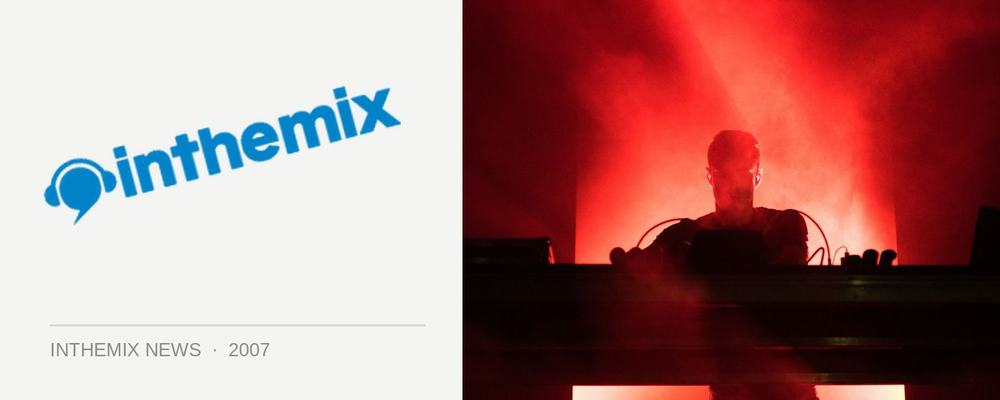

Extrawelt to rock Sweetchilli
After much speculation as to whether they’d be coming to Sydney, we can now confirm that revered tech/progressive act Extrawelt will indeed be gracing our city with a live performance. Sweetchilli will be hosting them at The Civic on Friday November 23rd.
With their sound incorporating elements of minimal, progressive and techno, production duo Arne Schaffhausen and Wayan Raabe hyave released more than ten original productions as well as dozens of remixes. Caned by everyone around the world from Sasha & Digweed, James Holden, Sven Vath and more, they were picked up early in the game by James Holden’s Border Community Label and they’ve been taking their smashing live performances right around the world to much acclaim.
Check it all out when Extrawelt play live at Sweetchilli, Friday November 23rd across two levels of The Civic.